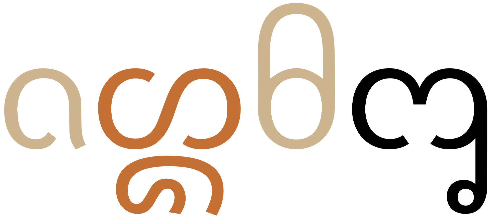
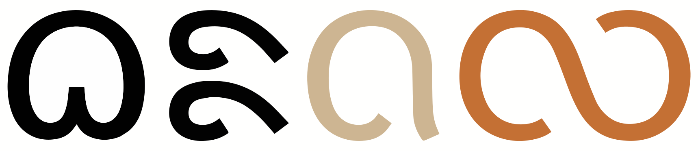

New Tai Lü vowels are all ordinary spacing letters, including pre-base vowels, which need to be inserted before the consonant in the text stream. However, some fonts incorrectly attempt to reorder those vowels for display. This includes Noto Sans New Tai Lue, and Dai Banna SIL Book/Light. Another SIL font, Nokyung, appears to render the text correctly.
This page brings together basic information about the New Tai Lü script and its use for the Tai Lü language. It aims to provide a brief, descriptive summary of the modern, printed orthography and typographic features, and to advise how to write Tai Lü using Unicode.
Dai Lue is spoken in the southern part of Yunnan, China, and in the surrounding countries by approximately 554,600 people.@Webonary,https://www.webonary.org/
The New Tai Lue script is a simplified version of the Tai Tham (Lanna) script, created in the 1950s, and mainly used by the Tai Lü people of Southern China for writing the Lü language. In 1987 the Old Tai Lü script was revived and widely used. However, the Chinese government once again promoted use of the New Tai Lü script in 1997, with the result that both scripts are currently in use in China.
The script is also known as Xishuangbanna Dai or Simplified Tai Tham.
᧑᧒ᦗᧃᦓᦱ
Although it is used for shop and street signs in some areas, few people can read the script.
The New Tai Lü script is an abugida, ie. consonants carry an inherent vowel sound that is overridden using vowel signs. See the table to the right for a brief overview of features for the modern Tai Lü orthography.
The orthography is syllable-based, and the language tonal.
New Tai Lü text runs left to right in horizontal lines.
Words are separated by spaces.
Each basic consonant is one of a pair, denoting either a high or low tonal register
for the same phonetic sound. This is very regular – each sound is represented by 2 consonant letters. Tone is indicated by a combination of the consonant class and tone marks.ws❯ consonants
No conjuncts are used for consonant clusters. Although, some clusters in Tai Tham are represented as single characters in New Tai Lü, in particular high tone variants such as ᦜ and ᦖ (ᩉᩖ and ᩉ᩠ᨾ in Tai Tham). ❯ clusters
Syllable-initial clusters use 6 dedicated letters (for 3 pairs of consonants). There are no medial consonant letters. ❯ onsets
Syllable-final consonant sounds use 7 dedicated letters, which cover all needs. ❯ finals
The New Tai Lü orthography is an abugida with one inherent vowela. It represents other vowels using 17 ordinary letters (no combining marks), though they are still called vowel signs. Unlike many other SE Asian scripts, New Tai Lü uses a visual encoding model, so vowel signs that appear before the base must also be typed and stored before the base (see prebase). ❯ vowels
There are 4 pre-base letters but no circumgraphs. However, this page lists 9 multipart vowels (made from 8 vowel signs), where in 6 cases vowel letters both precede and follow a base consonant. Multipart vowels can involve up to 3 glyphs, and can surround the base consonant(s) on up to 2 sides (left and right only). ❯ compositeV
All vowels are preceded by a consonant. What may be standalone vowels in other related languages are written after one of the 2 glottal stop consonant letters, and IPA transcriptions include the glottal stop. ❯ standalone
Tone is also marked by spacing characters, and only after unchecked syllables. There are 6 tones, which are marked by the onset class, the type of syllable, and where needed one of 2 tone marks. ❯ tones
One distinguishing feature of New Tai Lü is its regularity, and simplicity compared to Tai Tham, which can also be used for the Tai Lü language. Many of the glyphs resemble Tai Tham, but they are also simplified, commonly combining into a single code point what would be multiple characters in Tai Tham. For example, ᦦ, ᦜ, and ᦗ.
These are sounds for the Tai Lü language. For more details, see the Phonology pages of the @SIL Dai Lue Dictionary,https://www.webonary.org/dailu/language/phonology/?lang=en
Click on the sounds to reveal locations in this document where they are mentioned.
Phones in a lighter colour are non-native or allophones. Source Wikipedia.
Vowel sounds
Plain vowels
Diphthongs
Vowels in open syllables are long, whereas ones in closed syllables are short, except for aː and uː.
All diphthongs are plain vowels followed by i̯.
Consonant sounds
labial
dental
alveolar
post-
alveolar
palatal
velar
glottal
stops
pb
td
kkʷ
ʔ
aspirated
pʰ
tʰ
affricates
t͡s
t͡ɕ
fricatives
fv
ssʷ
ɕ
xxʷ
h
nasals
m
n
ŋ
approximants
w
l
j
Initials t͡s and s are palatalised before front vowels i, e, ɛ, and become t͡ɕ and ɕ, respectively. For example, t͡síŋhard and si᷄pten are pronounced as t͡ɕiŋ˥ and ɕip˧˥, respectively.
Finals
labial
dental
alveolar
post-
alveolar
palatal
velar
glottal
stop
p
t
k
ʔ
nasal
m
n
ŋ
approximant
w
j
Tones
Tai Lü has 2 tones in checked syllables, and 6 tones in unchecked syllables. See tones.ws
Structure
The script is syllable-based.
Syllables. A syllable's phonetic structure is C(ʷ)(V)(C) (unchecked) or C(ʷ)(V)C (checked). Unchecked syllables end with a vowel or one of the sonorants m, n, ŋ, w, j. Checked syllables end with one of ʔ, p, t, k.
The onset consonant sequence may be one of kʷ, xʷ, sʷ.
Tai Lü has 6 tones in unchecked syllables. In checked syllables there are two tones.ws
The characters used to represent the phonetics follow the model
(pV) C (V) (VS) (Fs|Fp) (T)
where: pV is a pre-base vowel, VS is the vowel shortener ᦰ, Fs is one of the set of final sonorants, Fp is one of the set of final plosives, and T is a tone marker.
There are no medial consonant letters. Single characters are available for the onset sequences.
An onset consonant may represent a high or low register. Every consonant sound is represented by a pair of letters.
Syllable-final consonants are one of a small set of dedicated letters.
There are two tone marks, which combine with the register of the onset consonant to determine one of the 6 tone values.
Words. Many words are single syllables, but also many are composed of multiple syllables. Multi-syllabic words may have one or more 'minor' syllables, which have the form CV and can only have one of the following short vowels: a, i, or u. All CV syllables in the following examples are minor syllables.@SIL Dai Lue Dictionary,https://www.webonary.org/dailu/language/phonology/?lang=en
ᦔᦞᦎᦲᦰ
ᦉᦳᦟᦱ
ᦗᧃᦒᦓᧂ
There are also many compound words. The following words are, respectively, compounds of thing:eat, and word:think.@SIL Dai Lue Dictionary,https://www.webonary.org/dailu/language/phonology/?lang=en
ᦃᦸᧂᦂᦲᧃ
ᦅᧄᦅᦹᧆ
Vowels
Vowel summary
Consonant locations are indicated by -. The inherent vowel is ⓘ.
a following a consonant is not written, but is seen as an inherent part of the consonant letter, so ka is written by simply using the consonant letter.
Vowel letters
ᦂᦲ
kiU+1982 NEW TAI LUE LETTER HIGH KA + U+19B2 NEW TAI LUE VOWEL SIGN II
New Tai Lue uses the following vowel signs. They may be used on their own, or in combination with others (see compositeV).
The typical use of ᦰ [U+19B0 NEW TAI LUE VOWEL SIGN VOWEL SHORTENER] is to produce a short open a vowel, however it is also used to indicate shortness for the vowel sign combinations described in the next section, in which case it represents just the glottal stop. It is also sometimes used to distinguish homonyms or for onomatopoeia.ws
Six of these single character vowel signs represent diphthongs that combine the basic vowel sound with i̯. (There is another in the list of pre-base vowel signs. and one more in the list of multipart vowels.)
Multipart vowels
ᦵᦂᦲᦰ
koːU+19B5 VOWEL SIGN E + U+1982 LETTER HIGH KA + U+19B2 VOWEL SIGN II + U+19B0 VOWEL SIGN SHORTENER
All vowels represented by combinations of the above characters. Most, but not all, of these involve the use of the vowel-shortening letter, ᦰ [U+19B0 NEW TAI LUE VOWEL SIGN VOWEL SHORTENER].
-ᦲᦰ␣-ᦹᦰ␣ᦵ-ᦰ␣ᦵ-ᦲᦰ␣ᦵ-ᦲ␣ᦷ-ᦰ␣ᦶ-ᦰ␣-ᦸᦰ␣ ␣ᦵ-ᧀ

A multipart vowel, made of 3 ordinary letters. The 2 vowel signs appear on opposite sides of the base. The first vowel letter is typed and stored before the base consonant.show composition
ᦵᦄᦲᧅ
Characters that don't appear in the combinations:
ᦱ␣ᦳ␣ᦴ␣ᦺ␣ᦻ␣ᦼ␣ᦽ␣ᦾ␣ᦿShow which combinations contain a given character:
ᦲ
-ᦲᦰ␣ᦵ-ᦲᦰ␣ᦵ-ᦲ
ᦹ
-ᦹᦰ
ᦸ
-ᦸᦰ
ᦰ
-ᦲᦰ␣-ᦹᦰ␣ᦵ-ᦰ␣ᦵ-ᦲᦰ␣ᦷ-ᦰ␣ᦶ-ᦰ␣-ᦸᦰ
ᦵ
ᦵ-ᦰ␣ᦵ-ᦲᦰ␣ᦵ-ᦲ␣ᦵ-ᧀ
ᦷ
ᦷ-ᦰ
ᦶ
ᦶ-ᦰ
ᧀ
ᦵ-ᧀ
Show details about glyph positioning
The following list summarises where vowel signs are positioned around a base consonant to produce vowels, and how many instances of that pattern there are. Numbers after the + sign represent combinations of vowel signs.
4 pre-base, eg. ᦵᦂe͕k (ke)
13 post-base, eg. ᦂᦱkā
+3 post+post-base, eg. ᦂᦲᦰkiʔ
+4 pre+post-base, eg. ᦵᦂᦲe͕ki (ke͕i)
+1 pre+post+post-base, eg. ᦵᦂᦲᦰe͕kiʔ (ke͕iʔ)
Vowel-signs only appear to the left and/or right of a consonant.
Standalone vowels
All vowels are preceded by a consonant. What may be standalone vowels in other related languages are written after one of the 2 glottal stop consonant letters, ᦀ [U+1980 NEW TAI LUE LETTER HIGH QA] and ᦁ [U+1981 NEW TAI LUE LETTER LOW QA], and IPA transcriptions include a glottal stop.
ᦀᦱᧇ
ᦶᦀᧅ
ᦵᦁᦲᧁᧈᦵᦋᦲᧁᧈ
Pre-base vowel signs
ᦷᦂ
koːU+19B7 NEW TAI LUE VOWEL SIGN O + U+1982 NEW TAI LUE LETTER HIGH KA
Four vowel signs appear to the left of the base consonant letter or cluster, eg. မေး.
ᦵ␣ᦷ␣ᦶ␣ ␣ᦺ
Because New Tai Lü uses a fully visual encoding model (since Unicode 8.0)u, the 4 vowel signs that appear to the left of the consonant are typed and stored before the consonant, even though they are pronounced after.

A pre-base vowel sign. The vowel letter is typed and stored before the consonant after which it is pronounced.details
New Tai Lü has two tone marks, which are written at the end of an unchecked syllable. Because consonants come in pairs to denote two tonal registers, the two tone marks allow for representation of six specific tones.ws
The tone marks are ordinary spacing characters.
ᧈ␣ᧉ
Tai Lü has 2 tones in checked syllables, and 6 tones in unchecked syllables.ws
Register
Checked?
Mark
Description
Example
High
checked
-
˧˥high-rising
ᦜᧅ
ᦜᦱᧅ
unchecked
-
˥high
ᦂᦱ
ᧈ
˧˥high-rising
ᦂᦱᧈ
ᧉ
˩˧low-rising
ᦂᦱᧉ
Low
checked
-
˧mid
ᦟᧅ
ᦟᦱᧅ
unchecked
-
˥˩falling
ᦅᦱ
ᧈ
˧mid
ᦅᦱᧈ
ᧉ
˩low
ᦅᦱᧉ
Vowel sounds mapped to characters
This section maps Tai Lü vowel sounds to common graphemes in the New Tai Lü orthography, where o indicates an open syllable, c a closed syllable, and s a standalone vowel. Click on a grapheme to find other mentions on this page (links appear at the bottom of the page). Click on the character name to see examples and for detailed descriptions of the character(s) shown.
Sounds listed as 'infrequent' are allophones, or sounds used for foreign words, etc.
Clusters of consonants do not occur regularlyu, and there is no virama.
Onset consonants can be labialised, but there are distinct code points for that (see onsets).
Clusters at syllable boundaries (final consonant followed by onset) don't interact and dedicated code points are available for syllable-final code points, so there is no confusion about syllable boundaries.
Consonant length
tbd
Consonant to script mapping
This section maps Tai Lü consonant sounds to common graphemes in the New Tai Lü orthography, where h indicates a high-register consonant, l a low-register, and f a final. Click on a grapheme to find other mentions on this page (links appear at the bottom of the page). Click on the character name to see examples and for detailed descriptions of the character(s) shown.
Sounds listed as 'infrequent' are allophones, or sounds used for foreign words, etc.
This section brings together information about the following topics:
writing styles;
cursive text;
context-based shaping;
context-based positioning;
baselines, line height, etc.;
font styles;
case & other character transforms.
Prescript vowels are visually ordered, and since there are no combining characters and no joining behaviour, the New Tai Lü script has no contextual variation or placement of glyphs. Nor is printed text cursive.
New Tai Lü has no special requirements for baseline alignment between mixed scripts and in general.
The script is monocameral, and no special transforms are needed to convert between characters.
Font styling & weight
tbd
Graphemes
Grapheme clusters
tbd
Since all New Tai Lü characters are spacing characters, they are all separate Unicode grapheme clusters. This means that, by default, operations such as forwards/backwards deletion, cursor movement & selection, and character counts all apply to individual characters, regardless of type or of syllabic context.
Punctuation & inline features
Word boundaries
Words are generally separated by spaces. However, in some texts spaces delimit phrases, rather than words.
Phrase & section boundaries
In this orthography, Tai Lü appears to use a mixture of ASCII and fullwidth punctuation.
Observation: The Lü translation of the text in the SIL Tai Lü dictionary uses both ASCII and fullwidth commas in the same text. It also contains ASII full stops and an ASCII exclamation mark. See @Dai Lue Dictionary,https://www.webonary.org/dailu/overview/introduction/?lang=lu.
Observation: New Tai Lü may include the following (needs to be checked).
！␣？␣：␣；␣。␣、␣，␣．
Bracketed text
Observation: The Lü translation of the text in the SIL Tai Lü dictionary uses both ASCII parentheses. See @Dai Lue Dictionary,https://www.webonary.org/dailu/overview/introduction/?lang=lu.
Observation: New Tai Lü may also use fullwidth Chinese punctuation, and therefore may include the following (needs to be checked).
This section looks at ways in which spacing is applied between characters over and above that which is introduced during justification.
Baselines, line height, etc.
tbd
Tai Lü uses the so-called 'alphabetic' baseline, which is the same as for Latin and many other scripts.
Counters, lists, etc.
tbd
Styling initials
tbd
Page & book layout
This section is for any features that are specific to New Tai Lü and that relate to the following topics:
general page layout & progression;
grids & tables;
notes, footnotes, etc;
forms & user interaction;
page numbering, running headers, etc.